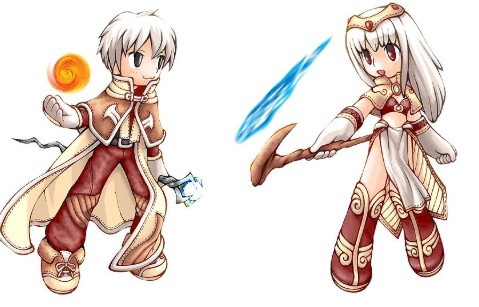
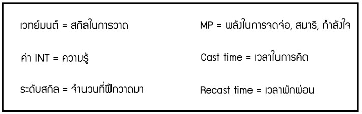
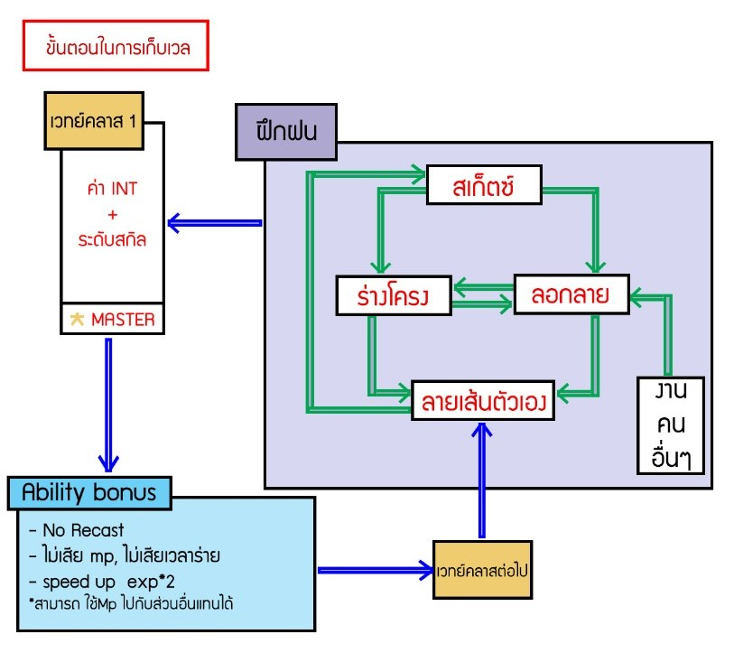
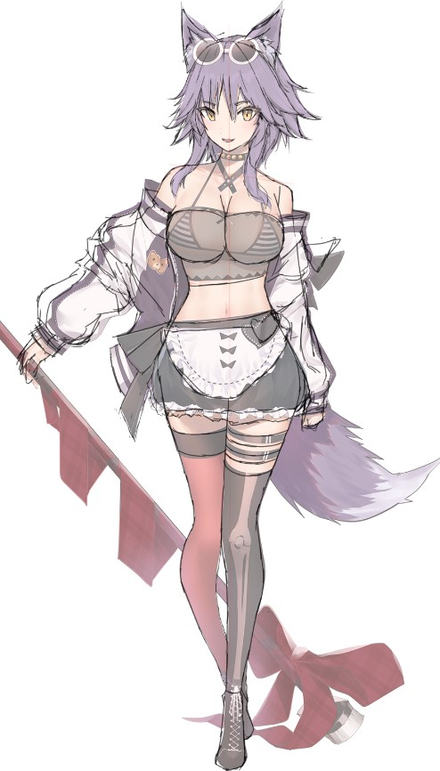
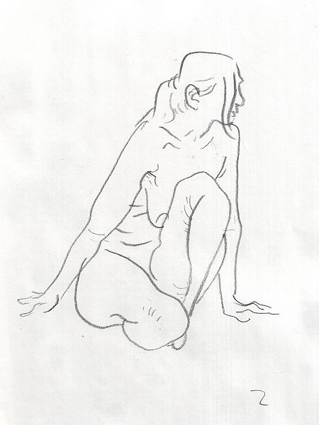
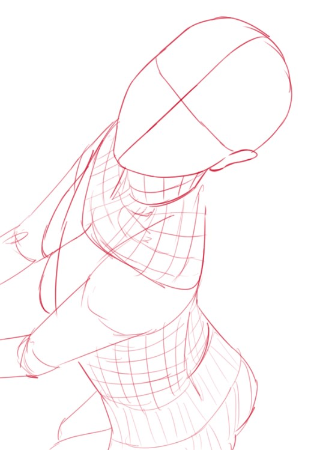
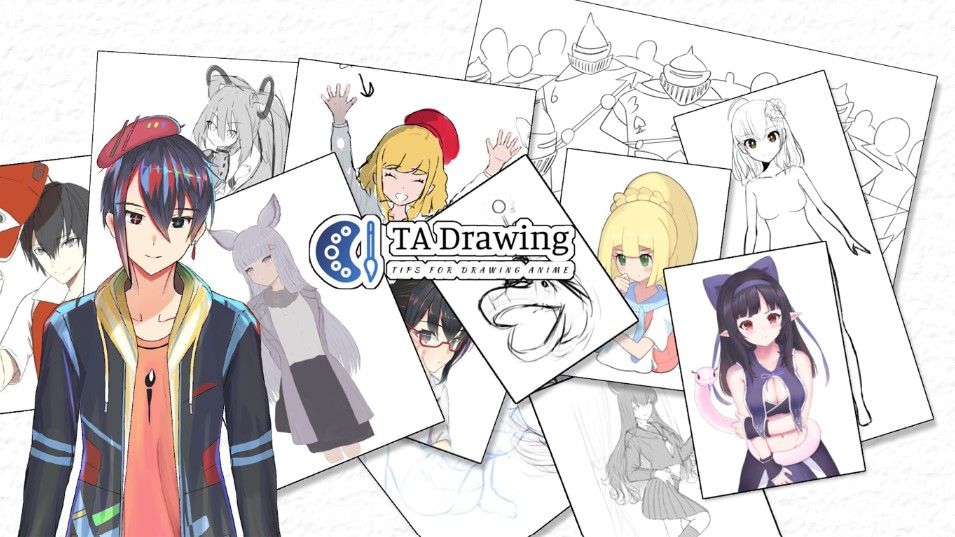

ก่อนที่จะอ่านบทความนี้ ผมแนะนำให้อ่าน part 1 ก่อนนะครับ
เริ่มกันเลยครับ
.
.
.
.
บทความนี้จะเป็น กึ่งบทความ กึ่งตาราง ที่จะอธิบายเกี่ยวกับ การวาดรูปให้เก่งขึ้น โดยอธิบายแบบ gamer ครับ
ทุกคนเคยเกม RPG เป็น job นักเวทย์ไหมครับ

หากคุณที่เคยเล่นมาก่อน ตารางต่อจากนี้ อาจจะทำให้คุณเข้าใจเกี่ยวกับการวาดรูปให้เก่งได้มากขึ้นครับ
ก่อนอื่นนี่คือตาราง ที่อยากให้จำครับ


ตามตารางที่เห้นนะครับ นี่เป็นตารางที่ผมเขียนเองครับ หาก
ใครเคยเล่นเกม RPG น่าจะเข้าได้ไม่ยากครับ แต่ผมจะอธิบายคำศัพท์ต่างๆไว้ด้านล่างครับ
1. ลอกลาย（模写)

การลอกลายของผมในที่นี้หมายถึง การทาบกระดาษ
ลงไปแล้ววาดตามรอบ เพื่อดูว่า ภาพนี้วาดยังไง หรือการที่เราวาดตามที่เราได้เห็นก็
มีผลเหมือนกันครับ วิธีที่แนะนำสำหรับคือ ให้วาดตามที่เห็นก่อนครับ พอเสร็จแล้ว ให้เอาไปทาบ
ว่าภาพเราต่างกันตรงไหนครับ
2. สเก็ตซ์（クロッキー）

การสเก็ตซ์ คือการวาดสิ่งเราจะวาด ยังไงก็ได้ให้เร็วที่สุด
โดยพยายามคงรายละเอียดให้ได้มากที่สุดครับ หากสนใจที่จะลอง
สเก็ตซ์โพสต่างๆ มีเว็บดีๆฟรีของญี่ปุ่น ที่ผมใช้อยู่ครับ
คือ http://www.posemaniacs.com/blog/category/pose/laying
3. ร่างโครง（デッサン）

การร่างโครงคือ การร่างส่วนต่างๆของร่างกายขึ้น
โดย อาจจะดูภาพตาม หรือคิดเองก็ได้ครับ
เป็นการทำเพื่อเราจะได้รู้ว่า ร่างกายของมนุษย์มีลักษณะอย่างไรครับ
4. ลายเส้นตัวเอง（オリジナル）

เมื่อเราได้ภาพ ที่มาจากการเรียนรู้จากการวาดของนักเขียนท่านอื่นๆ แล้ว ก็เกิดเป็นลายเส้นของตัวเองขึ้นมาครับ สำหรับใครที่อยากได้ลายเส้นเป็นของตัวเอง ผมไม่แนะนำให้รีบหามันมาครับ เพราะมันเป็นสิ่งที่เกิดขึ้นเอง จากการฝึกฝนมานับครั้ง ต่อครั้งแล้ว
สำหรับบทความนี้ก็จบเพียงแค่นี้ครับ ต่อไป part 2 จะเป็น ภาคปฎิบัติ เกี่ยวกับการทำยังไงให้วาดเก่งขึ้นครับ